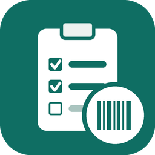

Agrega los recuentos del módulo Recuento de inventario a la pantalla principal de la app Código de barras. Se instala solo cuando ambos módulos están presentes.
Aparece debajo de Contar inventario y muestra la cantidad de líneas pendientes del usuario.
Al tocarla abre Contar de la app Recuentos: ubicaciones con su avance, carga de cantidades, escaneo con lector físico o cámara, segundo conteo y producto no esperado.